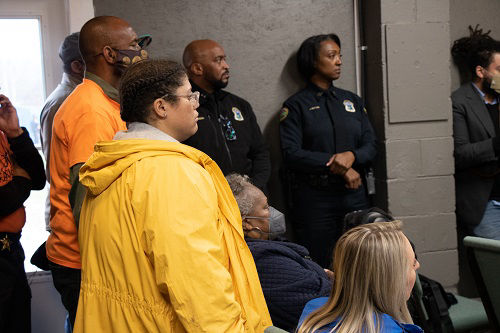

Justice Fund
Supporting crime-fighting initiatives and cases of documented police discrimination or brutality in Chattanooga.

Why the fund exists
On the weekend of September 26, 2021, a shooting on the 1100 block of Grove Street left two women, Labrecia Dews (37) and Keniqua Hughes (21), dead, and five others injured. Mayor Tim Kelly called it "life-changing trauma from incidents of gun violence" and said "the gunfire, the killing must end."
Brother Kevin Muhammad, a former Westside resident, organized a community reward fund that raised $10,000. The City of Chattanooga matched it, bringing the total reward to $20,000.
At the time, Chattanooga's crime rate stood 2.7 times above the U.S. average — higher than 98.9% of U.S. cities, with 33 homicides recorded that year.
How to give
By phone: call (423) 206-2866 to give by card. By mail: send a check or money order payable to "Community Haven," with "Justice Fund" in the memo line, to 815 N Hickory Street, Chattanooga, TN 37404.
Give to the Justice Fund